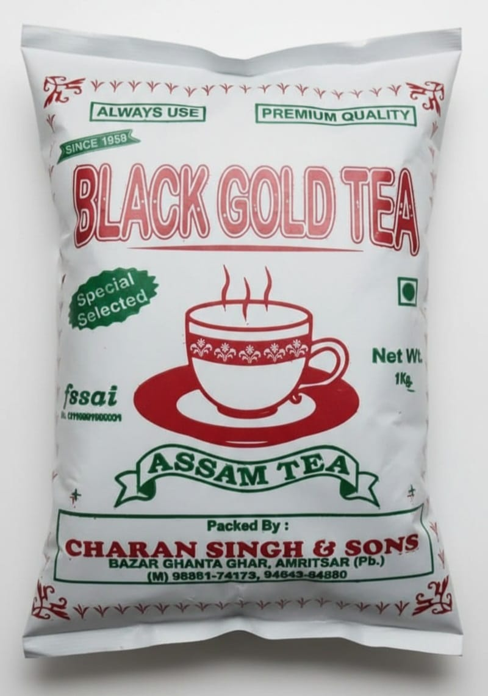
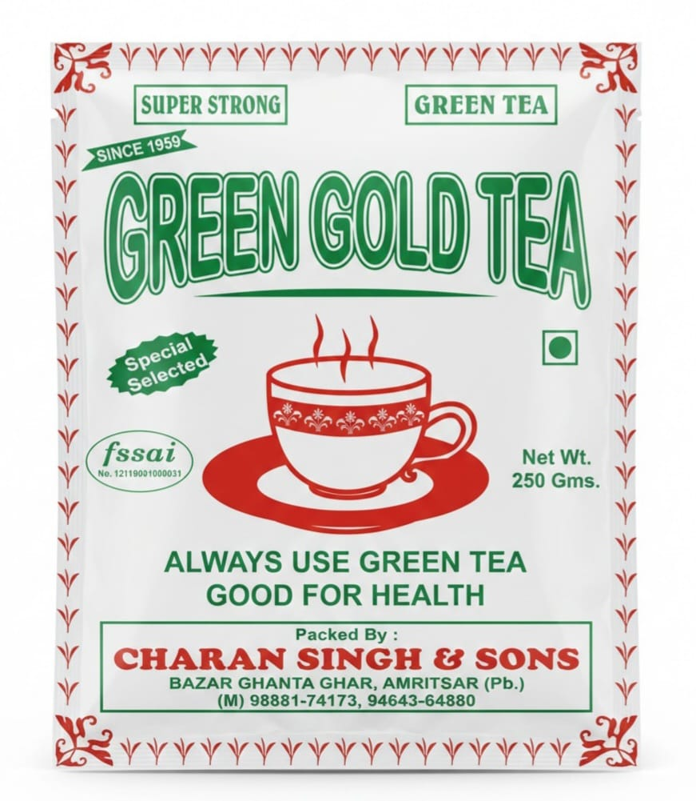
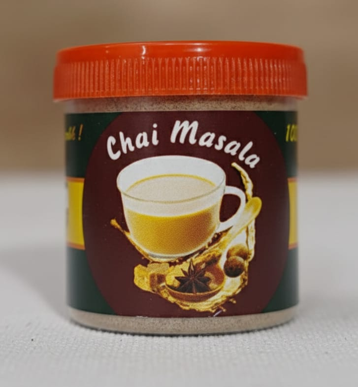

Tea Recipes
Discover how to prepare your favorite IntelliTea blends

Tea
Let's steep in happiness sprinkled with tea puns.
keyboard_arrow_down

Tea
Let's steep in happiness sprinkled with tea puns.
Ingredients
- 1 cup filtered water
- 1 tsp black gold tea
- 1/2 cup fresh milk
- a pinch of masala
- sugar (optional)
Preparation Steps
- 01 Boil water in a small pot with the masala.
- 02 Add the tea leaves and steep on low heat for 3 minutes.
- 03 Pour in the milk and bring to a rolling boil.
- 04 Strain into a ceramic cup and sweeten if desired.
- Note (You can make this as per your taste also.)

Green Tea (Kahwa)
Natural active immunity booster.
keyboard_arrow_down

Green Tea (Kahwa)
Natural active immunity booster.
Ingredients
- 1 cup filtered water
- 1 tsp green gold tea(kahwa) leaves
- a pinch of masala(optional as per your taste)
- sugar (optional)
- cardamom (in case you want to add it)
Preparation Steps
- 01 Boil water in a small pot with cardamom(if you want to add it).
- 02 Once the water boils properly turn off he stove.
- 03 Then after 2 seconds add on kahwa leaves and leave it for 2 minutes .
- 04 Then strain it into cup and you can add few drops of lemon or sugar also as per your taste.

Masala
Enhance the taste with this masala.
keyboard_arrow_down

Masala
Enhance the taste with this masala.
You can use this special masala in tea, green tea or even milk also.

Kashmiri Tea(Noon Chai)
Get the flavour of authentic kashmiri chai.
keyboard_arrow_down
Kashmiri Tea(Noon Chai)
Get the flavour of authentic kashmiri chai.
Ingredients
- 3 cup filtered water
- 2 tsp tea leaves
- namak/sugar (as per your taste)
Preparation Steps
- 01 Boil water in a pot with tea leaves, boil it untill the water is left half.
- 02 Then again add on water into this , and boil it again.
- 03 When you see it has changed its color almost after ____ time , then turn off the heat.
- 04 Then do some fentia and then take glass.